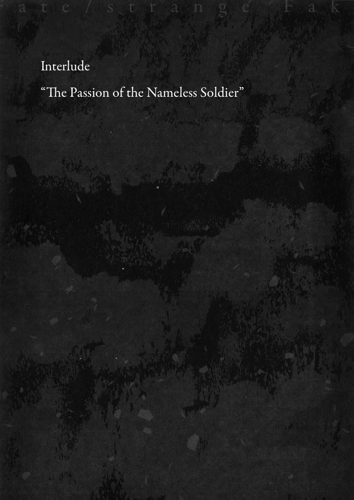
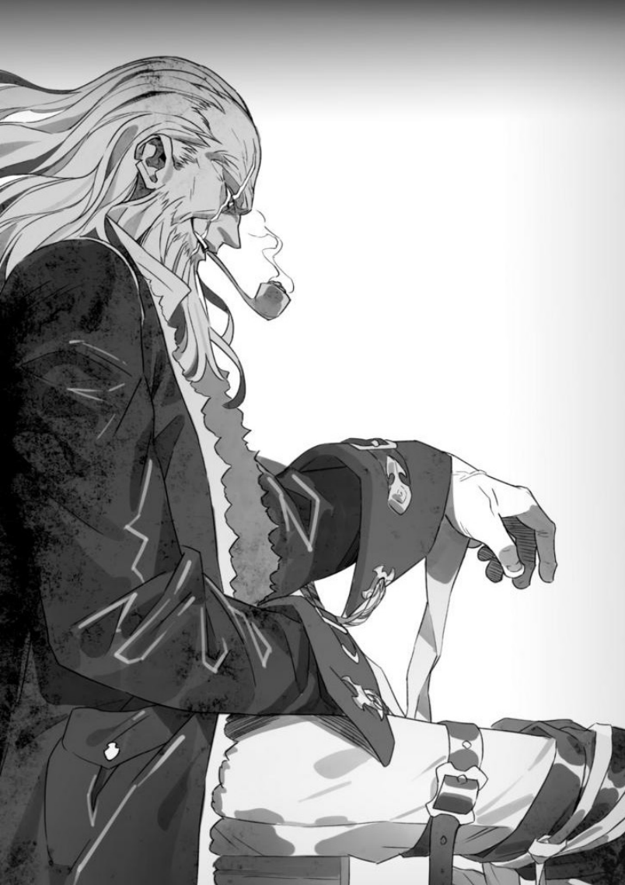

Os outros magos não devem demorar a terminar de invocar seus Espíritos Heroicos.
Ao ver o céu a leste começar a clarear, Sigma puxou fundo o ar e fechou as janelas da mansão. Em seguida, desceu ao porão — ao ateliê de outra pessoa. As barreiras já haviam sido desfeitas; não havia nada que impedisse o ritual de Sigma.
Será que eu consigo mesmo invocar um? Pensou Sigma enquanto descia. Afinal, o que é um Espírito Heroico? O que faz com que eles sejam escolhidos pelo "Trono"?
Ele era só um mercenário capaz de usar magia. Depois que o governo ao qual servia ruiu, seus destruidores o recolheram. Era só essa a extensão da relação entre eles. Não era como se ele tivesse algum poder especial, então por que havia sido o escolhido? Enquanto refletia sobre isso, Sigma continuou preparando o ritual em silêncio.
Vingar-se do governo jamais sequer lhe passara pela cabeça.
Desde muito jovem, recebera instrução básica de vários magos. Julgara-se que tinha aptidão com familiares, e o treinamento nesse ramo da magia fora martelado nele junto com o uso de armas e outras habilidades essenciais. O resto do tempo ele o passara ouvindo lições sobre o quanto o governo era "capaz" e "absoluto". No instante em que aquele governo foi facilmente substituído, porém, ele percebeu que tudo aquilo era mentira.
Ele não acreditava em nada. Até a própria habilidade lhe parecia pouco confiável e incerta depois de testemunhar a magia de sua empregadora e o treinamento da unidade de Faldeus. Era exatamente por isso que se perguntava. Se perguntava se realmente fazia sentido para alguém sem fé como ele participar de uma disputa pela posse de algo chamado "Santo Graal".
Sigma entendia o objetivo da Guerra do Santo Graal. Uma coisa capaz de realizar qualquer desejo, e uma disputa pela posse do Santo Graal, que era a base de todo o sistema. Ainda assim, ele não conseguia compreender por completo o próprio conceito desse "realizador de desejos". Para começo de conversa, a noção de "desejo" de Sigma já era extremamente fraca.
Quando sua empregadora perguntou se ele tinha algum desejo para o Graal, ele nem soube o que responder. Não era como se fosse desprovido de vontades. Se tivesse de citar alguma, desejava uma noite de sono tranquila e comida. Mas desejava isso a ponto de confiar seu futuro ao Graal, um dispositivo externo? E, mesmo que esse "Graal" jorrasse comida para sempre, ele provavelmente perguntaria o que o Graal ganharia com isso. Se fosse um suprimento sem necessidade de compensação, então era algo que Sigma simplesmente não conseguia entender. Nada poderia ser mais inquietante.
Ele, porém, guardava essas dúvidas dentro de si. Não fazia esforço algum para ir atrás delas. O rapaz emocionalmente deficiente continuava executando seu trabalho sem paixão. Tudo por uma boa noite de sono e o pão de cada dia. No ambiente em que fora criado, essas eram as coisas mais difíceis de obter.
"Pelo vento que pousa, uma muralha. As portas das quatro direções se fecham..."
O jovem que jamais acreditara em deuses, nem em milagres, nem sequer na própria força entoava o canto para realizar a invocação de um Espírito Heroico, um milagre equivalente a um ato divino. Fazia isso sem emoção nem desejo, apenas fazendo a energia mágica circular mecanicamente pelo próprio corpo e pelo local do ritual.
"Emerge do anel de restrição, ó Guardião das balanças!"
Ele não pretendia pôr nenhuma ênfase especial nisso, mas, ao chegar ao fim do encantamento, a energia mágica foi sugada de repente de seu corpo, e ele ergueu a voz por instinto. Ainda assim, aquilo era prova de que a energia mágica certamente havia fluído para o cerne do ritual.
Mesmo vendo a luz começar a brotar ao seu redor, Sigma não se abalou. Tudo o que sentia era a dificuldade de lidar com aquelas correntes de energia mágica.
Ao observar a luz revolta, o jovem reafirmou com extrema calma a própria posição. Nessa "Guerra do Santo Graal", ele não passava de um peão que sua empregadora usara para fechar as contas. O fato de não ter recebido um catalisador era prova disso.
"Sabe, eu na verdade estava pensando em preparar um monte de coisas para você também. O tesouro do Barba Negra, o frasco daquele tal de Paracelso, os grilhões do herói Spartacus... Mas aí eu tive uma ideia. Fiquei pensando no que apareceria se deixássemos a cidade escolher o Espírito Heroico, sem catalisador nenhum. Fiquei pensando no que esse caos poderia atrair."
Ela não tinha a menor ideia do que aconteceria. Com um sorriso extasiado no rosto, sua empregadora continuou a discorrer, numa voz clara e luminosa, sobre a tolice de abraçar de propósito um elemento tão incerto.
"Está preparado para que Ruler não venha, mas sempre existe uma chance, né? Mesmo assim, sem um catalisador, provavelmente acabaria vindo só um herói de natureza parecida com a de quem invoca.
"É por isso que você é perfeito; você não é nada. Não tem desejo nenhum pelo mundo, nem vontade de deixar sua marca nele... Você é praticamente o 'Soldado A'; não tem nada de heroico em você. Então pode servir como uma tela em branco.
"Se o Graal Falso realmente escolhe por vontade própria... o que você acha que vai aparecer? Bom, se não aparecer nada... eu não veria problema em você simplesmente fugir da cidade."
Então, no fim das contas, ele era um peão descartável sacrificado para satisfazer a curiosidade da empregadora. Mesmo que surgisse um Espírito Heroico completamente inútil, isso não faria diferença.
Se isso acontecer, o que eu devo fazer?
Pelo menos seria alguém com quem conversar. Mas não havia nada em particular que ele quisesse discutir, nem mesmo com um herói que um dia fora celebrado.
Sigma se ocupava com pensamentos tão frios quanto esses enquanto esperava as torrentes de luz e energia mágica se assentarem.
Ele de fato não passava de um peão naquela Guerra do Santo Graal. Ninguém lhe dava atenção. Existia apenas como o identificador "Σ"; nem mesmo um nome.
Até sua empregadora, Francesca, só pensava nele até o ponto de "Espero que ele traga algum elemento divertido de incerteza" e "Ele é meu peão favorito, então seria um bom negócio se sobrevivesse".
Nessa Guerra do Santo Graal Falsa, o jovem chamado Sigma era apenas o "Soldado A"; nem mago chegava a ser.
Até o instante em que sua invocação terminou.
Snowfield. A grande floresta.
"..."
Enkidu, possuidor de uma habilidade de "detecção de presenças" da mais alta classe, percebeu uma certa "anomalia". Ainda assim, não pensou que aquilo pudesse ser causado pela invocação de um Espírito Heroico.
Ele estreitou levemente os olhos e baixou-os para o chão como se pedisse desculpas.
"Será... que eu os deixei um pouco irritados?"
As palavras do Espírito Heroico foram ouvidas apenas pelo lobo prateado agachado ao seu lado.
Sem ninguém para entendê-las, as palavras de Enkidu foram absorvidas pela folhagem densa.
Mansão do pântano. Porão.
"..."
Depois da luz, não havia nada diante do altar ritual. Examinando devagar os arredores, Sigma notou uma figura solitária sentada num canto da sala.
Era um homem idoso sentado numa cadeira antiga, com uma bengala na mão. Tinha cabelos grisalhos. Uma grande cicatriz vertical ia do rosto até abaixo da gola. Pelas feições, já tinha idade para ser chamado de velho, mas, pela largura dos ombros robustos e outros detalhes, também podia passar por um fuzileiro ainda na ativa. Seu traço mais marcante era a perna artificial lisa e branca presa a um dos joelhos.
"..."
Sigma examinou o velho em silêncio, cauteloso. Era verdade que a presença dele era intimidadora, mas parecia um pouco diferente da de um "herói". Suas roupas eram mais recentes do que Sigma imaginara. No mínimo, ele não parecia o tipo de pessoa antiga que surgiria ilustrado num conto de mitos ou da Idade Média.
Enquanto Sigma quebrava a cabeça para pensar no que dizer, o velho quebrou o silêncio primeiro.
"Você é um Mestre na Guerra do Santo Graal? ...Humph. Parece que você não tem ambição nenhuma."
"...Quem é você?"
"Eu? Pode me chamar de capitão. Mas isso não vai significar nada por muito mais tempo."
"?"
Sigma coçou mentalmente a cabeça diante daquele jeito enviesado de falar.
O que ele quer dizer com isso, não vai significar nada? ...De qualquer forma, o melhor é formalizar o contrato primeiro.
Sigma decidiu questionar o homem depois de confirmar sua identidade e, por ora, respondeu à primeira pergunta do Espírito Heroico.
"...Eu sou o Mestre que realizou o ritual que invocou você."
O velho balançou a cabeça, os lábios se curvando num sorriso perverso.
"Heh heh... Parece que você entendeu tudo errado, garoto."

"?"
Não foi o velho quem respondeu ao Sigma perplexo.
"Você não nos invocou."
A voz veio de trás de Sigma. Ele girou para encará-la. Ao fazê-lo, puxou a pistola do coldre e apontou.
"Quem está aí?"
Enquanto perguntava, percebeu que a figura atrás dele pertencia a um garoto vestido de forma estranha. Ele trazia nas costas e nos ombros algo parecido com asas mecânicas. Elas, porém, haviam se tornado estranhamente esqueléticas, e pedaços de cera e penas brancas se entrelaçavam a elas aqui e ali. Se Sigma tinha de dizer, essa figura se vestia mais como alguém da era dos mitos antigos.
Sigma se perguntou se aquele garoto era o Espírito Heroico, e se o velho era um mago que invadira a mansão. Quando olhou para o lugar onde o velho estivera sentado, porém, ele já havia sumido de vista, deixando para trás apenas a cadeira vazia.
"Eu sou apenas — para colocar nos seus termos — um prisioneiro fugitivo", disse o garoto com um sorriso torto, ignorando a confusão de Sigma.
"O que quer dizer com isso?"
Sigma se virou em resposta à voz, mas quem a havia proferido já não estava em lugar nenhum. Em vez disso, a voz de outro homem veio de outra direção.
"Nós não somos o Espírito Heroico que você invocou. Somos apenas projetados ao seu redor como as sombras dele."
Diante da porta estava um garoto que parecia ter pouco mais de dez anos, vestido com uma roupa branca. Uma serpente de aparência tranquila se enroscava no cajado que ele carregava, voltada para Sigma e pondo a língua para fora.
"Uma criança...?"
"Ah, desculpa. É um efeito de ter usado meu próprio corpo num estudo clínico com o sangue da Medusa... Bem, não precisa se preocupar. Sou uma sombra; logo vou desaparecer."
O corpo do garoto sorridente se afinou como névoa e então desapareceu no ar.
O quê...? O que está acontecendo?
"Você realmente tirou a palha mais curta, cara. Agora não tem mais como escapar. Embora, se você fosse uma garota bonitinha, eu teria me materializado e tentado a sorte como Espírito Heroico."
Mais uma voz.
"Nós não somos Espíritos Heroicos; nada do tipo. Não podemos usar Fantasmas Nobres e não temos nem um par de hashis, quanto mais uma lâmina."
E outra.
"Seus únicos defeitos foram sua sorte e as pessoas que você conhece. Graças a elas, você acabou invocando para si uma provação inevitável."
Vozes diferentes apareciam e desapareciam pela câmara subterrânea, sobrepondo-se umas às outras e atormentando a mente de Sigma com palavras que ele não entendia.
"Mesmo assim, nós temos grandes esperanças em você, sabia? Esperanças de que você sobreviva a tudo isso e se torne Lancer."
Ele ouvira dizer que aqueles que portavam Selos de Comando e se tornavam Mestres eram capazes de ver o status de um Espírito Heroico. Essas coisas pareciam Espíritos Heroicos, mas ele não conseguia ler informação nenhuma delas. Ainda assim, mesmo sem ter firmado contrato algum, ele claramente sentia um fluxo de energia mágica ligando-o a alguma coisa.
Ainda assim, não parece estar sugando minha energia mágica.
Era uma situação em que uma pessoa comum muito provavelmente gritaria, mas Sigma, cujas emoções sempre foram escassas, expressou apenas um leve espanto.
"O que quer dizer com eu vou me tornar Lancer?" perguntou ao grupo de autoproclamadas sombras que surgia e sumia diante dele. "Antes disso, o que vocês são, afinal? Eu nem sei ao certo que classe de Espírito Heroico apareceu."
Então, o homem que se chamava de "capitão" reapareceu sentado na cadeira. As rugas em sua testa severa se aprofundaram ainda mais quando ele respondeu.
"Entendo. Não é bem a forma certa de dizer, mas nosso papel é estar sempre observando tudo lá de cima, então suponho que você deva nos chamar de...
"Watcher".